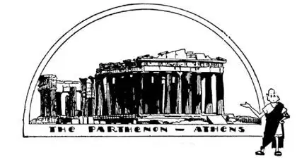
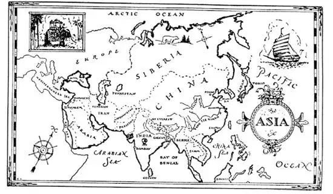

46
The Land of the Gods
众神之国

THE first book I ever read was Æsop’s Fables. Æsop was a slave who lived in a little country called Greece. Æsop the slave wrote such famous fables that his master set him free. The book I read was in English, but the Fables were first written in Greek.
Greece is so small that if I pointed to it on the map down at the corner of Europe it would be entirely covered by the tip of my finger. But small as it is, it was at one time the greatest country, its people were the greatest people, and its language the greatest language in the World. When the rest of the people in Europe were ignorant savages the people in Greece were writing the greatest books, building the most beautiful buildings, making the most beautiful statues, and teaching the most famous schools that have ever been. There is one Book that was first written in Greek but is now printed in over eight hundred languages, and more people have read it than any other book in the World. It’s the Bible—the New Testament part.
But the people of Greece didn’t at first believe in the Bible or Christ. They didn’t believe in only one god but in many gods, who they said lived above the clouds on the top of a mountain called Olympus. The mountain is still there, but if you should climb to the top you wouldn’t find any gods. When the sun shone the Greeks said that the god Apollo was driving his golden chariot across the sky. When the rain fell they said another god, Jupiter, was watering the earth, and when the lightning flashed they said he was angry and throwing thunderbolts. They believed that there was a god of love and that there was a god of war and that there was a god of almost everything in the World.
Greece is in two chief parts, like a tiny North and South America, which were once joined by a thin stem of land called the Isthmus of Corinth, only four miles across. In the northern part was, is, and probably always will be a great city called Athens. The people in Athens thought that one goddess in particular looked after their city. She was the goddess of wisdom called Athene Parthenos, so they named their city Athens, after her first name; and on the top of a high hill they built the most beautiful temple in the World to her and called it the Parthenon, after her last name. Inside of this temple they placed a huge statue of her, made of gold and ivory. The statue has now disappeared, nobody knows where, and the building itself was blown up in a war and is now in ruins. The beautiful sculptures on this temple were taken down and carried away to London and are now in the British Museum. So if you want to see what beautiful statues the Greeks once made, don’t go to Athens—go to London. On the side of the hill on which is the Parthenon and all through the city of Athens are other temples to their many gods. These temples had no domes nor spires like Christian churches, but columns around the outside.

帕特农神庙——雅典
The most beautiful temple in the World is now in ruins
世界上最漂亮的神庙如今已成废墟
The marble for these buildings and statues they got from a hill near Athens called Mount Pentelicus. Some one has said the reason the Greeks long ago made such beautiful statues and buildings was because they had such beautiful marble to work with; but there is still beautiful marble on Mount Pentelicus, and yet no one seems able to make such beautiful things of it any more.
People long ago used to go to a place called an oracle to have their fortunes told. At Delphi not far from Athens was one of the most famous oracles. There was a crack in the ground from which gas was always escaping. Over this crack in the ground sat a goddess called a Sibyl and over the goddess a little temple was built. The escaping gas put the goddess to sleep, just as the gas a doctor or dentist uses puts people to sleep so they won’t feel any pain; then the goddess began to talk in her sleep and would mumble answers to the questions asked her. People came from all over the World to hear what the oracle had to tell them. The Delphic Oracle, like the statue of Athene, has now gone—no one knows when, nor how, nor where.
Did you know that you could speak Greek? Well, when you say “music,” “museum,” or “amusements” you are speaking Greek, for all three words are named from nine beautiful goddesses called “Muses,” who used to live near a spring at Delphi. This spring was named Castalia, and it was supposed that those who drank from the spring would be able to write music and poetry. The Castalian spring is still there, and sheep and goats as well as men drink its cool waters, but now it does no more than quench the thirst of men and beasts.

Long before the time of Christ, athletic meets used to be held in Greece once every four years. These were called Olympic Games, and champions in running and jumping and other sports from all over Greece used to compete for a prize, which was a simple crown made of laurel leaves. There is a huge stadium in Athens where such games and races were held, but it had fallen to ruins. Not so many years ago a Greek who had made a fortune and wanted to do something splendid for his home city repaired and recovered the old stadium with marble, and again the Olympic Games were held there.
Near Athens there is another hill called Mount Hymettus, where was found a very delicious kind of honey. It is said to taste like flowers and it was supposed to be the food the gods lived upon—they called it “ambrosia.” You can still get the same honey in the restaurants in Athens, but there are no more gods to feed on it.
Greece of to-day is famous for—what do you suppose? For poetry? No. For music? No. For sculpture? No. For beautiful buildings? No. My geography says it is famous for “currants.” Currants are little dried grapes that are used in cakes and puddings. Currants are named from Corinth, the stem that joins north and south Greece, or rather, I should say, the stem that used to join them, for the Greeks have cut a canal four miles long straight through the isthmus so that boats can now sail across Corinth without going all the way around Greece.
There is a lunch-room downtown kept by a young Greek who has come to America to make his fortune. He calls it the Delphi Restaurant. Last week I went in for luncheon, and just for fun I asked him if he had any ambrosia. “No,” said he, “we have corned beef and cabbage to-day.”
【中文阅读】
我读过的最早一本书是《伊索寓言》。伊索曾经是一个奴隶，生活在一个叫“希腊”的小国。身为奴隶，伊索却写了很多著名的寓言故事，于是他的主人就给了他自由。我读的那本书是英译本，但是《伊索寓言》最初是用希腊文写的。
希腊是个很小的国家，在地图上，它位于欧洲下方一个角落里，如果我用手指着它，指尖就会把它完全盖住。但是，尽管很小，这个国家曾经有一个时期却是世界上最伟大的国家，希腊人民是世界上最伟大的民族，希腊语是世界上最伟大的语言。当其他欧洲人还是愚昧无知的野蛮人的时候，希腊人正在创作世界上最伟大的著作，建造最漂亮的建筑，制作最美丽的雕像，创办迄今为止最著名的学校。有一本书最初是用希腊文写的，现在这本书以800多种语言出版发行，是世界上拥有读者最多的一本书，这本书就是圣经——《新约》部分。
然而，希腊人最初并不信奉《圣经》或基督。他们不相信只有一个神，而是相信有很多神。根据他们的说法，这些神居住在一座名叫“奥林匹斯山”山顶的云上。奥林匹斯山依然屹立在那儿，但是，如果你爬上山顶，就会发现根本没有神。当太阳照耀大地的时候，希腊人说太阳神阿波罗正驾着他的金色双轮战车驶过天空；下雨时，他们说是另一位神，主神朱庇特，正在给地球浇水，当闪电划过天空的时候，他们说是因为他愤怒了而正在轰击雷霆。希腊人相信有掌管爱情的神，有主管战争的神，还有主宰世界万物的神。
希腊国土，主要由两部分组成，像微型版的南北美洲。这两部分曾经由被称为“科林斯地峡”的一条狭长陆地相连接，只有4英里宽。在希腊的北部，有一个过去是、现在是、很可能将来也是伟大的城市——雅典。雅典人认为有一位女神特别眷顾他们的城市，她就是智慧女神，叫雅典娜 · 帕特农，所以就以她的名字来命名他们的城市——雅典；而且，他们还在一座高山上，为了纪念她建造了世界上最美丽的神庙并以她的姓命名为“帕特农神庙”。在神庙内，他们放置了一座她的巨像，是用金子和象牙制作的。但是，现在雕像不在了，没有人知道它在哪里。神庙在一次战争中被炸毁了，现在是一片废墟。后来，神庙上的一些雕刻品被拆下来，运到了伦敦，现在存放在大英 博物馆里。所以，如果你想看希腊人刻的美丽雕像，不要去雅典，去伦敦吧。在帕特农神庙的那座山的山坡上，以及整个雅典城，还有纪念众神的其他神庙，这些神庙不同于基督教的教堂，没有圆屋顶，也没有尖塔，但是外侧有圆柱环绕。
建造这些建筑物以及雕像所需的大理石，希腊人是从雅典附近一座名叫“潘泰列克斯山”的山上取来的。有人曾说，希腊人很久以前就能创造出如此美丽的雕像和建筑物是因为有如此美丽的大理石供他们使用。然而，现在潘泰列克斯山上仍然有美丽的大理石，但是似乎再也没有人能用大理石创造出如此美丽的东西了。
很久以前，人们常去一个叫“神谕”的地方算命。在离雅典不远的德尔斐有一个最有名的神谕所。那儿地面有一条裂缝，不断向外冒气。在裂缝的上方坐着一位叫“西比尔”的女神，女神的上方建了一座小神庙。从裂缝中冒出的气体让女神入睡，就像医生或牙医用麻醉让病人入睡而不会感到任何疼痛一样。女神在睡眠状态中开始说话，用含糊不清的声音回答人们向她提出的问题。人们从世界各地来到这里聆听神谕。像雅典娜雕像一样，德尔斐神谕所也消失了——没有人知道它是何时何地以什么方式消失的。
你知道吗，你说的英语中就含有希腊语？当你说“music”（音乐）、“museum”（博物馆）或“amusement”（娱乐）的时候，你就在说希腊语，因为这三个单词源于九位美丽女神的名字，她们叫“缪斯”（Muses），她们曾住在德尔斐一处清泉附近，清泉名叫“卡斯塔利亚”。据说那些喝了泉水的人，都有创作诗歌和歌曲的灵感。卡斯塔利亚泉现在还在那儿，人和绵羊、山羊都喝里面清凉的泉水，但是，泉水现在也只是给人和动物解解渴而已。
在耶稣诞生前很久，希腊每四年举行一次体育大会，叫做“奥林匹克运动会”。来自希腊各地的跑步、跳远以及其他项目的冠军都来争夺一个奖品，奖品是一个用月桂树叶编的简单花冠。雅典有一个巨大的体育场专门用来举办这样的比赛，但是后来变成了废墟。没多少年前，一位发了财并想为自己的家乡做点贡献的希腊人用大理石修复了古老的体育馆，这样，奥林匹克运动会就又在那儿举行了。
在雅典附近，还有一座山，叫海麦搭斯山，人们在那儿发现了一种非常美味的蜂蜜。据说尝起来像花的味道，是过去传说中众神赖以生存的食物——叫做“神馔”。你在雅典的餐馆里可以品尝到同样的蜂蜜，只是再没有神仙以此为食了。
现在的希腊是以什么著称呢？你猜一猜。诗歌？不是。音乐？不是。雕刻？不是。美丽的建筑？也不是。我的地理学书告诉我，希腊是以“加仑子”著称的。加仑子是无核小葡萄，做蛋糕和布丁可以放一些加仑子。加仑子的名字来自科林斯，也就是连接南北希腊的那条狭长的地带，更确切地说，是过去连接南北希腊的狭长的地带，因为希腊人已经挖了一条4英里长的运河，笔直地贯穿这条地峡，现在船只可以穿过科林斯而不用走远路绕过整个希腊。
我们这里市中心有一家快餐店，是一位想来美国发财的希腊年轻人经营的，他把小快餐店叫做“德尔斐餐馆”。上周，我去那儿吃午餐。只是为了逗乐，我问他有没有“神馔”——什么好吃的？他回答说，“没有，今天只有咸牛肉和卷心菜。”